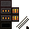
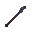
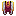

Templier du Phénix (Mêlée + Feu)
En une phrase : une épée enflammée (dégâts de feu fixes à chaque coup, +60 % sur cible en feu) et quelques sorts de feu pour engager.
Pour qui ?
Pour le joueur polyvalent qui veut du mêlée et de la magie sans spécialiser.
Les 3 choix du début
| Choix | Pick | Pourquoi |
|---|---|---|
| Origine | Pyriosi Phoenix Knight | +7 dégâts de feu par coup, +60 % de dégâts sur cible en feu, +200 % puissance Feu, régénération au soleil |
| Classe | Warrior | Bonus mêlée et bouclier |
| Bénédiction | Arthur | +60 % contre les morts-vivants ; après le dragon, bonus de feu, d'attaque et de vitesse d'attaque |
Handicaps
−200 % puissance Glace, affaibli hors du soleil, −40 % de PV dans les biomes très froids.
Équipement : quoi chercher
- Épée à effet de feu : Hearthflame, Molten Edge… + affixes de dégâts de feu et de vitesse d'attaque.
- Puissance du feu (Power Fire) sur les accessoires pour tes sorts ; gemmes Inferno.
- Armure solide (tu es au contact).
Sorts
| Sort | Rôle |
|---|---|
| Burning Dash | Charge dans un halo de feu qui brûle ceux que tu traverses (enflammer = +60 % de dégâts) |
| Firebolt | Petit projectile de feu : allume les cibles à distance |
| Heat Surge | Vague de chaleur autour de toi : enflamme et réduit l'armure des ennemis |
Talents
L'arbre ne donne pas de puissance de sorts : vise la défense (Esquive, Armure, Vie), la voie des gemmes du Mineur (Cullinan : +1 socket et +30 % d'efficacité des gemmes sur l'armure, Greed : +1 socket partout, Aristocrat : un anneau de plus, donc plus d'affixes de puissance) et Hidden Knowledge (Enchanteur) pour de meilleurs enchantements. La liste exacte calculée est plus bas.
Face aux boss
- Rotation type : Firebolt ou Dash pour enflammer, puis frappe : +60 % tant que le boss brûle.
- Morts-vivants : Arthur + feu = fusion parfaite.
- Immunisés au feu : change d'arme.
Variantes
- Chevalier-mage du Phénix si tu veux surtout de la magie.
Comment adapter ce build
Catégorie : 🛡 Tanks & hybrides — voir les autres builds de la catégorie.
- Priorité d'équipement : PV > armure/robustesse > blocage > soins > dégâts. Un bouclier est presque obligatoire.
- Armure ou esquive ? Armure pour les coups réguliers, esquive pour les grosses attaques isolées. Les boss du pack ont des attaques en pourcentage de tes PV : les PV d'abord.
- Pas de dégâts ? Ajoute une arme à effet (feu, poison) plutôt qu'un affixe de dégâts : tu fais des dégâts passifs en tenant.
- Dans un groupe de 7 : un seul tank suffit ; un deuxième vaut mieux en soutien (Templier sacré).
Pour aller plus loin : Adapter un build à son loot · Débutant → Optimisé · charge-le dans le planificateur pour tester tes modifications.
Tes 3 choix en détail
Ce que chaque choix te donne réellement, tiré des fichiers du pack. Les pouvoirs sans chiffre sont décrits à titre indicatif.
Pyriosi Pheonix Knight
Né du royaume du feu de Pyrios, tu as rejoint l'illustre ordre des Chevaliers Phénix. Feu et lame sont ta doctrine.
- Infernal Blade — Tes armes sont imprégnées de puissante magie du feu : tu infliges des dégâts de feu bonus et peux enflammer les ennemis.
- Damnation of Pyr — Le dieu de la flamme Pyr se réjouit que tu incinères des ennemis en son nom : les cibles enflammées subissent 60 % de dégâts en plus de ta part.
- Solar Eclipse — Tu tires ta puissance de l'exposition au soleil : quand tu n'es pas exposé, tu t'affaiblis et tu ralentis.
- Pheonix Renewal — L'étreinte brûlante du soleil régénère ton corps et ton esprit : sous le soleil, tu régénères rapidement ta vie.
- Endothermic — Le froid extrême perturbe la magie du feu qui circule en toi et te fragilise : tes PV sont réduits de 40 % dans les biomes très froids.
- Fire Magic Adept — Les membres de l'ordre du Phénix maîtrisent la magie du feu mais méprisent la magie de glace : tu gagnes +200 % de puissance du feu mais subis un malus égal en glace.
- Blazing Dash — Élance-toi dans un brasier furieux qui incinère tout sur ton passage. (touche par défaut : G)
Warrior
Ces guerriers honorables préfèrent l'épée et le bouclier pour abattre leurs ennemis.
- Weapon Knowledge — Capable d'exploiter chaque arme au maximum, tu infliges un peu plus de dégâts.
- Shield Wield — Tu es moins ralenti quand tu te protèges avec un bouclier.
Arthur's Blessing
Tu es favorisé par Arthur, le légendaire roi guerrier. Tu reçois sa bénédiction chevaleresque.
- Minor Boon of Radiance — La bénédiction d'Arthur renforce ton courage face aux forces des ténèbres : +60 % de dégâts aux morts-vivants.
- Major Boon of Excalibur — Après avoir tué l'Ender Dragon, Arthur exalte ton arme : dégâts de feu, dégâts d'attaque et vitesse d'attaque.
Ce que chaque niveau t'apporte
| Débutant | Intermédiaire | Avancé | Optimisé | |
|---|---|---|---|---|
| Vie max | 95 | 176 | 351 | 485 |
| Armure | 24 | 61 | 105 | 114 |
| Esquive | 0 % | 39 % | 72 % | 75 % |
| Dégâts par coup | 50 | 122 | 528 | 774 |
| Critique | 5 % × 1,5 | 5 % × 1,5 | 232 % × 3,6 | 362 % × 6,2 |
| Mana max | 100 | 100 | 100 | 100 |
| Points de talent | 15 | 45 | 100 | 115 |
Avec un loot médian (plus proche de la réalité)
Mêmes équipements, mais chaque affixe à 50 % de sa plage au plus et les gemmes d'une rareté en dessous.
| Débutant | Intermédiaire | Avancé | Optimisé | |
|---|---|---|---|---|
| Vie max | 88 (95) | 157 (176) | 302 (351) | 380 (485) |
| Armure | 24 (24) | 56 (61) | 105 (105) | 114 (114) |
| Dégâts par coup | 33 (50) | 106 (122) | 297 (528) | 390 (774) |
| DPS estimé | 61 (92) | 294 (358) | 16660 (37947) | 353516 (1621048) |
Entre parenthèses : valeur du build « parfait ».
Les chiffres augmentent surtout grâce à la rareté de l'équipement, au nombre d'affixes/gemmes et aux points de talent. Ils servent à comparer les niveaux entre eux.
Arbre de talents
Les nœuds en couleur sont ceux à prendre ; choisis le niveau avec les boutons. Molette pour zoomer, glisser pour déplacer, survole un nœud pour lire son effet. départ mineur notable clé de voûte
Fiche chiffrée — Débutant
Sorts
| Sort | Niv. | Mana | Incantation | Recharge | Effets (calculés) |
|---|---|---|---|---|---|
| Élan ardent (Burning Dash) | 10 | 38 | 0 s | 10 s | Dégâts 5 |
| Trait de feu (Firebolt) | 10 | 28 | 0 s | 1 s | Dégâts 9 |
| Vague de chaleur (Heat Surge) | 8 | 106 | 1 s | 45 s | Intensité de Rend (armure −) 135 · Durée de l'effet 72s · Rayon (blocs) 10 |
Équipement visé (Débutant)
| Emplacement | Objet | Affixes de stat (valeur max de la plage) | Gemmes |
|---|---|---|---|
| Arme | Épée en fer (vanilla) Rare dégâts 6 | Graceful : +20–35 % (mult.) Vitesse d'attaque | Hearty Jewel |
| Casque | Adventurer Helmet Rare armure 5 | Blessed : +3–6 Vie max | Gem of the Incandescent Inferno |
| Plastron | Adventurer Chestplate Rare armure 7 | Blessed : +3–6 Vie max | Gem of the Warlord |
| Jambières | Adventurer Leggings Rare armure 6 | Blessed : +3–6 Vie max | Brawler's Gem |
| Bottes | Adventurer Boots Rare armure 5 | Blessed : +3–6 Vie max | Hearty Jewel |
| Anneau 1 | Anneau Rare | Immortal : +7–8,5 % (mult.) Vie max | Gem of the Incandescent Inferno |
| Anneau 2 | Anneau Rare | Immortal : +7–8,5 % (mult.) Vie max | Gem of the Incandescent Inferno |
Talents choisis (15 points) — départ : classe Forgeron
Counterweight · Thick Arms · Healthy Diet · Heavy Strike
Ouvrir ce build dans le planificateur (onglet « Builds prêts » → Templier du Phénix (Mêlée + Feu) — Débutant)
Fiche chiffrée — Intermédiaire
Sorts
| Sort | Niv. | Mana | Incantation | Recharge | Effets (calculés) |
|---|---|---|---|---|---|
| Élan ardent (Burning Dash) | 10 | 38 | 0 s | 10 s | Dégâts 6 |
| Trait de feu (Firebolt) | 10 | 28 | 0 s | 1 s | Dégâts 23 |
| Vague de chaleur (Heat Surge) | 8 | 106 | 1 s | 45 s | Intensité de Rend (armure −) 305 · Durée de l'effet 174s · Rayon (blocs) 10 |
Équipement visé (Intermédiaire)
| Emplacement | Objet | Affixes de stat (valeur max de la plage) | Gemmes |
|---|---|---|---|
| Arme |  HearthflameÉpique dégâts 20 | Graceful : +20–40 % (mult.) Vitesse d'attaque Violent : +4–6 Dégâts d'attaque | Ballast Gem Brawler's Gem |
| Casque | Darksteel Helmet Épique armure 9 | Blessed : +3–8 Vie max | Jewel of the Blue Skies |
| Plastron | Darksteel Chestplate Épique armure 12 | Blessed : +3–8 Vie max | Gem of the Warlord Gem of the Warlord |
| Jambières | Darksteel Leggings Épique armure 10 | Blessed : +3–8 Vie max | Inferno Gem |
| Bottes | Darksteel Boots Épique armure 8 | Blessed : +3–8 Vie max | Hearty Jewel |
| Anneau 1 | Anneau Épique | Immortal : +8–10,2 % (mult.) Vie max Power Fire : +25–97 % Puissance des sorts de Feu | Reinforced Jewel |
| Anneau 2 | Anneau Épique | Immortal : +8–10,2 % (mult.) Vie max Healthy : +4–7 Vie max | Gem of the Incandescent Inferno |
| Collier | Collier Épique | Immortal : +8–17 % (mult.) Vie max Immortal : +8–10,2 % (mult.) Vie max | Brawler's Gem |
Talents choisis (45 points) — départ : classe Mineur
Safety Helmet · Heavy Strike · Healthy Diet · Cullinan · Life Crystal · Fat Body · Energy Reserve · Polishing · Precious Weapon · Light Crystals · Estrela de Fura
Ouvrir ce build dans le planificateur (onglet « Builds prêts » → Templier du Phénix (Mêlée + Feu) — Intermédiaire)
Fiche chiffrée — Avancé
Sorts
| Sort | Niv. | Mana | Incantation | Recharge | Effets (calculés) |
|---|---|---|---|---|---|
| Élan ardent (Burning Dash) | 10 | 38 | 0 s | 10 s | Dégâts 16 |
| Trait de feu (Firebolt) | 10 | 28 | 0 s | 1 s | Dégâts 352 |
| Vague de chaleur (Heat Surge) | 8 | 106 | 1 s | 45 s | Intensité de Rend (armure −) 4482 · Rayon (blocs) 10 |
Équipement visé (Avancé)
| Emplacement | Objet | Affixes de stat (valeur max de la plage) | Gemmes |
|---|---|---|---|
| Arme |  Molten EdgeMythique dégâts 17 | Intricate : +20–35 % Chance de critique Graceful : +25–45 % (mult.) Vitesse d'attaque Lacerating : +20–30 % Dégâts critiques | Brawler's Gem Gem of the Samurai Gem of the Warlord |
| Casque | Ascendant Rouge Helmet Mythique armure 22 | Blessed : +3–8 Vie max | Gem of the Incandescent Inferno Jewel of the Blue Skies |
| Plastron | Ascendant Rouge Chestplate Mythique armure 27 | Blessed : +3–8 Vie max | Gem of the Warlord Inferno Gem Inferno Gem |
| Jambières |  Ascendant Rouge LeggingsMythique armure 25 | Blessed : +3–8 Vie max | Inferno Gem Inferno Gem |
| Bottes | Ascendant Rouge Boots Mythique armure 20 | Blessed : +3–8 Vie max | Slipstream Gem Inferno Gem |
| Anneau 1 | Anneau Mythique | Immortal : +9–13 % (mult.) Vie max Intricate : +20–23,8 % Chance de critique Lacerating : +20–22,5 % Dégâts critiques | Solar Gem Gem of the Incandescent Inferno Solar Gem |
| Anneau 2 | Anneau Mythique | Immortal : +9–13 % (mult.) Vie max Intricate : +20–23,8 % Chance de critique Power Fire : +25–125 % Puissance des sorts de Feu | Gem of the Incandescent Inferno Brawler's Gem Solar Gem |
| ring3 | Mythique | — | — |
| Collier | Collier Mythique | Immortal : +9–25 % (mult.) Vie max Immortal : +9–13 % (mult.) Vie max Intricate : +20–23,8 % Chance de critique | Gem of the Incandescent Inferno Brawler's Gem |
| Ceinture | Ceinture Mythique | Immortal : +9–13 % (mult.) Vie max Intricate : +20–23,8 % Chance de critique Power Fire : +25–125 % Puissance des sorts de Feu | Gem of the Incandescent Inferno Solar Gem |
| Dos | Cape/Dos Mythique | Immortal : +9–13 % (mult.) Vie max Intricate : +20–23,8 % Chance de critique Power Fire : +25–125 % Puissance des sorts de Feu | Brawler's Gem Brawler's Gem |
| Charme | Charme Mythique | Immortal : +9–13 % (mult.) Vie max Intricate : +20–23,8 % Chance de critique Lacerating : +20–22,5 % Dégâts critiques | Gem of the Incandescent Inferno Brawler's Gem |
Talents choisis (100 points) — départ : classe Chasseur
Will to Survive · Polishing · Life Crystal · Safety Helmet · Cullinan · Heavy Strike · Healthy Diet · Cursed Stone · Precious Weapon · Light Crystals · Spiked Rings · Gutting · Fat Body · Spicy Meal · Energy Reserve · Star Shards · Runic Blade · Estrela de Fura · Backstab · Animate Weapon
Ouvrir ce build dans le planificateur (onglet « Builds prêts » → Templier du Phénix (Mêlée + Feu) — Avancé)
Fiche chiffrée — Optimisé (BiS)
Sorts
| Sort | Niv. | Mana | Incantation | Recharge | Effets (calculés) |
|---|---|---|---|---|---|
| Élan ardent (Burning Dash) | 10 | 38 | 0 s | 10 s | Dégâts 342 |
| Trait de feu (Firebolt) | 10 | 28 | 0 s | 1 s | Dégâts 10598 |
| Vague de chaleur (Heat Surge) | 8 | 106 | 1 s | 45 s | Intensité de Rend (armure −) 134595 · Rayon (blocs) 10 |
Équipement visé (Optimisé (BiS))
| Emplacement | Objet | Affixes de stat (valeur max de la plage) | Gemmes |
|---|---|---|---|
| Arme | Molten Edge Mythique dégâts 17 | Intricate : +20–35 % Chance de critique Graceful : +25–45 % (mult.) Vitesse d'attaque Lacerating : +20–30 % Dégâts critiques Infernal : +3–5 Dégâts de feu | Gem of the Samurai Brawler's Gem Brawler's Gem Gem of the Warlord |
| Casque | Ascendant Rouge Helmet Mythique armure 22 | Blessed : +3–8 Vie max | Gem of the Incandescent Inferno Jewel of the Blue Skies Inferno Gem |
| Plastron | Ascendant Rouge Chestplate Mythique armure 27 | Blessed : +3–8 Vie max | Inferno Gem Inferno Gem Inferno Gem Inferno Gem |
| Jambières | Ascendant Rouge Leggings Mythique armure 25 | Blessed : +3–8 Vie max | Inferno Gem Inferno Gem Inferno Gem |
| Bottes | Ascendant Rouge Boots Mythique armure 20 | Blessed : +3–8 Vie max | Slipstream Gem Inferno Gem Inferno Gem |
| Anneau 1 | Anneau Mythique | Intricate : +20–23,8 % Chance de critique Lacerating : +20–22,5 % Dégâts critiques Immortal : +9–13 % (mult.) Vie max Power Fire : +25–125 % Puissance des sorts de Feu | Gem of the Incandescent Inferno Gem of the Samurai Gem of the Warlord Gem of the Warlord |
| Anneau 2 | Anneau Mythique | Intricate : +20–23,8 % Chance de critique Lacerating : +20–22,5 % Dégâts critiques Immortal : +9–13 % (mult.) Vie max Power Fire : +25–125 % Puissance des sorts de Feu | Gem of the Incandescent Inferno Gem of the Samurai Gem of the Warlord Gem of the Warlord |
| ring3 | Mythique | — | — |
| Collier | Collier Mythique | Immortal : +9–25 % (mult.) Vie max Intricate : +20–23,8 % Chance de critique Lacerating : +20–22,5 % Dégâts critiques Immortal : +9–13 % (mult.) Vie max | Gem of the Incandescent Inferno Gem of the Samurai Gem of the Warlord |
| Ceinture | Ceinture Mythique | Intricate : +20–23,8 % Chance de critique Lacerating : +20–22,5 % Dégâts critiques Immortal : +9–13 % (mult.) Vie max Power Fire : +25–125 % Puissance des sorts de Feu | Gem of the Incandescent Inferno Gem of the Samurai Gem of the Warlord |
| Dos | Cape/Dos Mythique | Intricate : +20–23,8 % Chance de critique Lacerating : +20–22,5 % Dégâts critiques Immortal : +9–13 % (mult.) Vie max Power Fire : +25–125 % Puissance des sorts de Feu | Gem of the Incandescent Inferno Gem of the Samurai Gem of the Warlord |
| Corps | Corps Mythique | Intricate : +20–23,8 % Chance de critique Lacerating : +20–22,5 % Dégâts critiques Immortal : +9–13 % (mult.) Vie max Power Fire : +25–125 % Puissance des sorts de Feu | Gem of the Incandescent Inferno Gem of the Samurai Gem of the Warlord |
| Mains | Gants Mythique | Intricate : +20–23,8 % Chance de critique Lacerating : +20–22,5 % Dégâts critiques Immortal : +9–13 % (mult.) Vie max Power Fire : +25–125 % Puissance des sorts de Feu | Gem of the Incandescent Inferno Gem of the Samurai Gem of the Warlord |
| Bracelet | Bracelet Mythique | — | Gem of the Incandescent Inferno Gem of the Samurai Gem of the Warlord |
| Talisman | Talisman Mythique | Intricate : +20–23,8 % Chance de critique Lacerating : +20–22,5 % Dégâts critiques Immortal : +9–13 % (mult.) Vie max Power Fire : +25–125 % Puissance des sorts de Feu | Gem of the Incandescent Inferno Gem of the Samurai Gem of the Warlord |
| Charme | Charme Mythique | Intricate : +20–23,8 % Chance de critique Lacerating : +20–22,5 % Dégâts critiques Immortal : +9–13 % (mult.) Vie max Power Fire : +25–125 % Puissance des sorts de Feu | Gem of the Incandescent Inferno Gem of the Samurai Gem of the Warlord |
Talents choisis (115 points) — départ : classe Forgeron
Iron Shell · Polishing · Life Crystal · Safety Helmet · Cullinan · Cursed Stone · Precious Weapon · Estrela de Fura · Aristocrat · Star Shards · Spiked Rings · Gutting · Light Crystals · Backstab · Heavy Strike · Fat Body · Spicy Meal · Healthy Diet · Energy Reserve · Runic Blade · Animate Weapon · Will to Survive
Ouvrir ce build dans le planificateur (onglet « Builds prêts » → Templier du Phénix (Mêlée + Feu) — Optimisé (BiS))